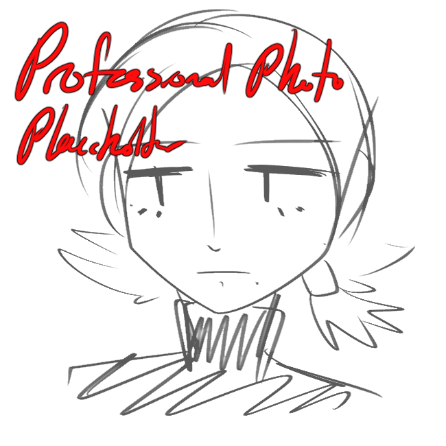

About Me
Hello,
I am a recent graduate from the University of Massachusetts Amherst. I received my Bachelor of Arts in English with a specialization in creative writing in 2026, on top of already earning my Associate of Arts in Liberal Arts from Berkshire Community College in 2024.
As a writer and digital artist, I am eager to work in creative fields in order to explore ways to combine my love for art and writing together. I have experience in software such as Adobe Creative Cloud, Canva, and Clip Studio Paint, and used these while interned for the UMass Visiting Writer’s Series and the UMass English Department.
If you’re interested in learning about my work, examples of my work can be viewed under the "Portfolio" section.
—Marlie
